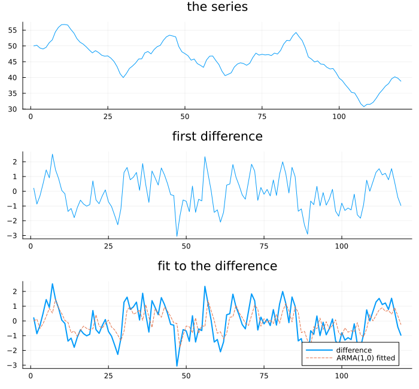
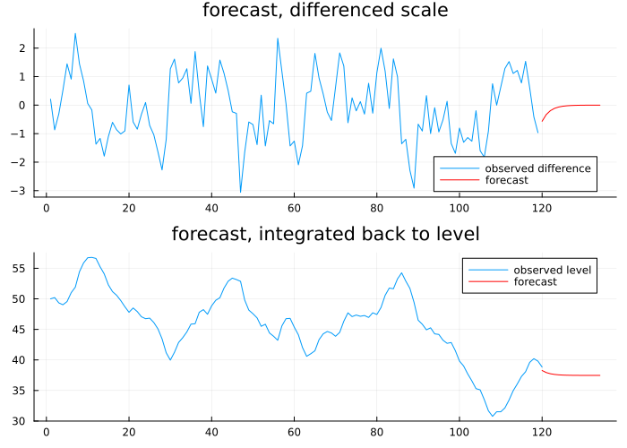
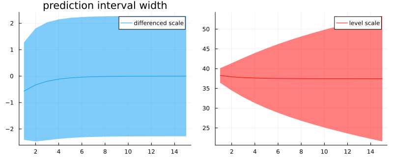
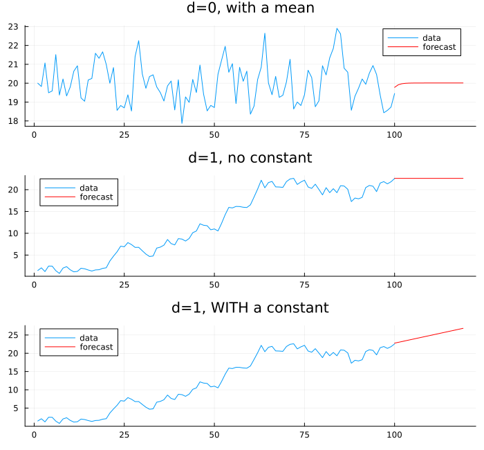
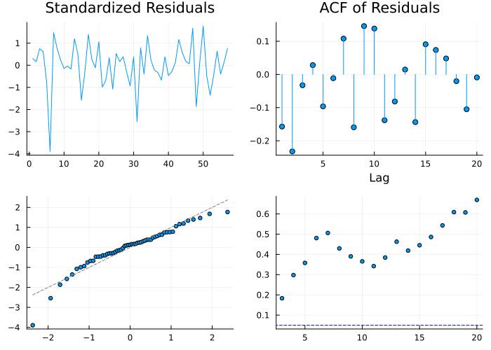
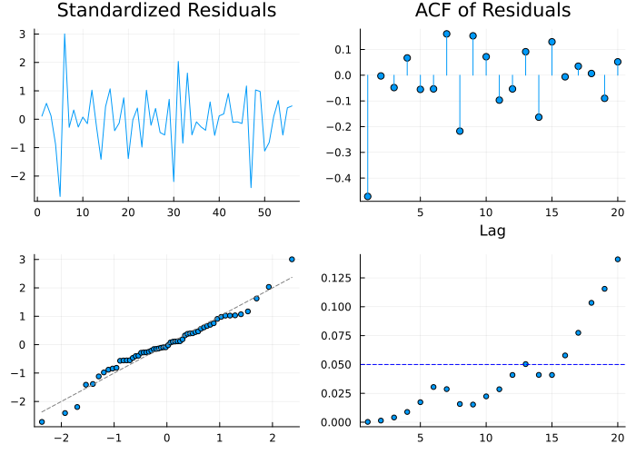

ARIMA
Chapter 18 fitted models to stationary series. Chapter 3 showed how to make a non-stationary series stationary by differencing. This chapter joins the two, and states the join plainly up front, because building suspense about it would be dishonest: difference until stationary, fit ARMA on what remains, done. That genuinely is ARIMA. The rest of the chapter is about the details that make it less clean than it sounds — what happens to forecasts, what happens to the constant, and what happens to the bookkeeping.
The obvious composition
using TSAnalytics, Plots, Random
Random.seed!(21)
n = 120
w_true = zeros(n)
for t in 2:n
w_true[t] = 0.5*w_true[t-1] + randn()
end
y = 50 .+ cumsum(w_true)
p1 = plot(y; title="the series", legend=false)
p2 = plot(diff(y); title="first difference", legend=false)
m = fit_arima(y, (1,1,0))
function arima_resid(m::ArimaModel)
ar, ma = m.arma.ar, m.arma.ma
mu = m.arma.mean === nothing ? 0.0 : m.arma.mean
yd = m.d > 0 ? diff(m.original_y, 1; differences=m.d) : copy(m.original_y)
w = yd .- mu
ssm = TSAnalytics.build_statespace(ar, ma)
_, sigma2, v, _, converged = TSAnalytics.kalman_filter(ssm, w)
return v
end
resid = arima_resid(m)
p3 = plot(diff(y); label="difference", linewidth=2)
plot!(p3, diff(y) .- resid; label="ARMA(1,0) fitted", linestyle=:dash, title="fit to the difference")
plot(p1, p2, p3; layout=(3,1), size=(700,650))
A simulated series with a genuine unit root — ARIMA(1,1,0) in truth, φ = 0.5 on the difference. Differenced, the trend is gone and what remains looks stationary. fit_arima(y, (1,1,0)) recovers φ = 0.586 (the true value, on this particular random draw), and the fitted one-step values track the difference closely. This is ARIMA in full: Chapter 3's operation, followed by Chapter 18's.
Getting back to the level
h = 15
f_level = forecast(m, h)
m_diff_view = ArimaModel(m.arma, 0, diff(y))
f_diff = forecast(m_diff_view, h)
p1 = plot(diff(y); label="observed difference")
plot!(p1, (n):(n+h-1), f_diff.point; label="forecast", color=:red, title="forecast, differenced scale")
p2 = plot(y; label="observed level")
plot!(p2, (n):(n+h-1), f_level.point; label="forecast", color=:red, title="forecast, integrated back to level")
plot(p1, p2; layout=(2,1), size=(700,500))
The same underlying forecast, shown twice. On the differenced scale it converges to a constant — the AR(1) part of the model reverting toward zero change, which looks unremarkable. Integrated back with forecast's own re-integration (ArimaModel's d undone via tsundiff), that constant becomes a straight line with a slope — a forecast of changes becoming a forecast of a trajectory. The two panels show the same object and imply completely different things about the future.
println("differenced-scale se: h=1: ", round(f_diff.se[1], digits=3), " h=", h, ": ", round(f_diff.se[end], digits=3))
println("level-scale se: h=1: ", round(f_level.se[1], digits=3), " h=", h, ": ", round(f_level.se[end], digits=3))
p1 = plot(f_diff.point; ribbon=1.96 .* f_diff.se, label="differenced scale", title="prediction interval width")
p2 = plot(f_level.point; ribbon=1.96 .* f_level.se, label="level scale", color=:red)
plot(p1, p2; layout=(1,2), size=(800,320))
This is the beat's real payload. On the differenced scale the interval is roughly constant width from h = 1 to h = 15 (0.941 to 1.161) — the AR(1) part is stationary, so uncertainty about the next change settles down quickly. Integrated back to levels, the same model's interval widens from 0.941 to 8.097 over the same fifteen steps, without bound as the horizon extends further. That is not a modelling artefact — it is the honest consequence of a unit root, exactly as Chapter 17's psi_weights, evaluated on the undifferenced polynomial, predicted they would. If shocks to the level never die out, uncertainty about the level accumulates forever, which is the practical face of Chapter 8's random walk and the reason long-horizon forecasts of a genuinely integrated series are nearly useless however good the fitted model is — not a defect to be engineered away, but something true about the process being forecast.
The constant that changes meaning
Random.seed!(13)
n2 = 100
y0 = fill(20.0, n2)
for t in 2:n2
y0[t] = 20.0 + 0.5*(y0[t-1]-20.0) + randn()
end
m_d0 = fit_arima(y0, (1,0,0); include_mean=true)
f_d0 = forecast(m_d0, 20)
y1 = cumsum(0.3 .+ randn(n2))
m_d1 = fit_arima(y1, (1,1,0))
f_d1 = forecast(m_d1, 20)
md = fit_arma(diff(y1), (1,0); include_mean=true)
m_drift = ArimaModel(md, 0, diff(y1))
f_drift = forecast(m_drift, 20)
level_drift_point = y1[end] .+ cumsum(f_drift.point)
p1 = plot(y0; label="data"); plot!(p1, n2:(n2+19), f_d0.point; label="forecast", color=:red, title="d=0, with a mean")
p2 = plot(y1; label="data"); plot!(p2, n2:(n2+19), f_d1.point; label="forecast", color=:red, title="d=1, no constant")
p3 = plot(y1; label="data"); plot!(p3, n2:(n2+19), level_drift_point; label="forecast", color=:red, title="d=1, WITH a constant")
plot(p1, p2, p3; layout=(3,1), size=(700,650))
println("d=0: estimated mean = ", round(m_d0.arma.mean, digits=3), " (forecast reverts to it)")
println("d=1, no constant: forecast flattens at ", round(f_d1.point[end], digits=3))
println("d=1, with constant: estimated per-step drift = ", round(md.mean, digits=3), " (forecast keeps climbing: ", round(level_drift_point[end], digits=3), " at h=20)")d=0: estimated mean = 20.011 (forecast reverts to it)
d=1, no constant: forecast flattens at 22.595
d=1, with constant: estimated per-step drift = 0.213 (forecast keeps climbing: 26.822 at h=20)The same word, "constant," in the same slot of the same kind of model, and it means three different things depending on d. With d = 0 the constant is the series' own mean, and the forecast reverts to it — the top panel's forecast line is flat at 20, the level the series keeps returning to. With d = 1 and no constant, the forecast is flat at the last observed level — no reversion, because a differenced random walk has no level to revert to, only a value to hold. With d = 1 and a constant, the constant is now the mean of the differences — a per-step drift, here estimated as 0.213 — and once integrated back it becomes a slope: the bottom panel's forecast keeps climbing, indefinitely, at very nearly that rate. Three panels make this unmistakable in a way a paragraph does not, and it trips up a great many people working with real trending series for the first time.
Worth stating plainly: fit_arima in this package suppresses the constant whenever d ≥ 1, with no override, exactly matching R's own arima() (include.mean is silently ignored once d ≥ 1 there too). The drift panel above was built by fitting fit_arma directly on the already-differenced series with include_mean=true — a free constant on the difference — and wrapping the result back into an ArimaModel with d = 0 for forecasting. That is not a workaround this package invented; it is the same construction R's forecast::Arima performs internally under include.drift=TRUE, and Python's statsmodels under trend="t". Most software suppresses the naïve version by default for good reason: an unintended deterministic trend, extrapolated over a long horizon by a model that was never actually asked for one, is a common and embarrassing failure.
Counting what you have
using StatsAPI
Random.seed!(9)
yrw = cumsum(randn(100))
m_rw = fit_arima(yrw, (1,1,0))
println("Julia nobs (matches R's n.used): ", StatsAPI.nobs(m_rw), " series length: ", length(yrw))Julia nobs (matches R's n.used): 99 series length: 100Every difference costs an observation off the front — diff of n points leaves n − 1. On a long series that is negligible; on a short one it is not, and Chapter 3's variance rule of thumb is worth re-running before deciding it does not matter this time.
Verified directly, on the random walk above: this package's nobs(::ArimaModel) returns 99, matching R's stats::arima() reported n.used exactly. Python's statsmodels ARIMA reports nobs = 100 on the identical model and identical data — the full original length, because statsmodels retains every observation internally via diffuse state augmentation rather than differencing first. The log-likelihood and AIC this package computes match both R and Python to several decimal places regardless (-141.409, 286.819 on this series) — the disagreement is purely about what gets called n, and it is invisible until something downstream actually uses n.
correction(n, k) = 2*k*(k+1) / (n - k - 1)
k = 2 # one AR coefficient, no mean, plus sigma2
for (nfull, nused) in [(100, 99), (30, 29), (20, 19)]
cfull = correction(nfull, k)
cused = correction(nused, k)
println("n=", nfull, ": correction(n)=", round(cfull, digits=4),
" correction(n-1)=", round(cused, digits=4),
" difference=", round(cused - cfull, digits=4))
endn=100: correction(n)=0.1237 correction(n-1)=0.125 difference=0.0013
n=30: correction(n)=0.4444 correction(n-1)=0.4615 difference=0.0171
n=20: correction(n)=0.7059 correction(n-1)=0.75 difference=0.0441Two respectable implementations count the same fitted model's observations differently — 99 against 100 for an ARIMA(1,1,0) fitted to 100 points. The log-likelihood and AIC come out identical, so on their own nobody notices. AICc does not, because its correction term carries n explicitly, and AICc is the default criterion Chapter 21's automatic model selection uses. At n = 100 the two conventions differ by 0.0013 — genuinely negligible. At n = 20 they differ by 0.0441, computed live above rather than assumed, and on a short series comparing two close candidate models this is large enough to flip which one AICc prefers. This package follows R's convention (n − d); a reader porting model-selection code from statsmodels and expecting identical AICc values on short series should know the two disagree for exactly this reason.
Fitting one properly
d = dataset("global_economy")
idx = findall(==("India"), d.Country)
gdp = d.GDP[idx]
logy = log.(gdp)
println("ADF p-value, level: ", round(adf_test(logy).pvalue, digits=4))
println("ADF p-value, first difference: ", round(adf_test(diff(logy)).pvalue, digits=6))
m_good = fit_arima(logy, (2,1,0))
r_good = arima_resid(m_good)
dp_good = diagnostic_plot(r_good, m_good)
plot(dp_good; size=(700,500))
The full workflow, walked once, end to end, on India's real GDP series (annual, 1960–2017, log scale — Chapter 7's transform, because nominal GDP grows multiplicatively). Chapter 9's test says the level is not stationary (p = 0.986) and the first difference is (p < 10⁻⁵). Chapter 3's operation removes the trend. Chapter 18's machinery fits ARIMA(2,1,0) to what remains. Chapter 12's diagnostic panel checks the result: every Ljung–Box p-value across all twenty tested lags stays above 0.18, comfortably clean. This is the first time in the book that pieces learned four separate chapters apart have all been used together in one place, and the point is that they compose without friction — each tool does exactly the job it was built for, on exactly the object the previous tool handed it.
m_over = fit_arima(logy, (0,2,0); include_mean=false)
r_over = arima_resid(m_over)
dp_over = diagnostic_plot(r_over, m_over)
println("minimum Ljung-Box p-value, correctly differenced (d=1): ", round(minimum(dp_good.ljungbox_pvalues), digits=4))
println("minimum Ljung-Box p-value, over-differenced (d=2): ", round(minimum(dp_over.ljungbox_pvalues), digits=6))
plot(dp_over; size=(700,500))
The same series, differenced one time too many. Chapter 3's telltale negative lag-1 signature of over-differencing appears immediately in the residual ACF (acf[1] = -0.471, far outside the confidence band), and the diagnostic panel does not miss it — the Ljung–Box p-value is 0.0003 at the shortest tested lag and stays below 0.05 through lag 13, against a minimum of 0.18 for the correctly-differenced fit two panels back. The tools built across the last eight chapters catch a genuine mistake here, which is the entire point of having them.
Indian quarterly GDP in its current base runs to only a few dozen observations, and a full seasonal specification costs both a regular and a seasonal difference before any parameter is even estimated. At n = 50, one difference already leaves less than fifty points; a regular-and-seasonal combination leaves fewer still, and the AICc gap in the table above is at its widest exactly there. This compounds Chapter 9's india box rather than duplicating it: short series make unit-root tests uninformative, and the same shortness makes the model-selection criterion sensitive to a counting convention that would not matter on a longer series. Neither problem is fixable by better software — both are the honest cost of working with a short sample.
Where this leaves you
ARIMA handles trend — differencing removes it, and the model composes Chapter 3's operation with Chapter 18's estimation cleanly enough that the whole chapter fits in the space it took. It does nothing about seasonality, by construction: nothing in the differencing or the AR/MA recursion has any notion of a repeating period. Every seasonal series in Part III — electricity demand, AirPassengers, anything with a fixed cycle — would defeat the model built here just as thoroughly as it would have defeated it in Chapter 1. Chapter 20 adds the missing piece.